Week 1: 20th - 24th of July
During Class Work
Class 1 (21st of July)
This class was an introduction to software engineering and involved a group challenge which helped decide our team members.
Reflection
What did you do in the last 30 minutes?
- Looked for a more inspirational team name (Piet)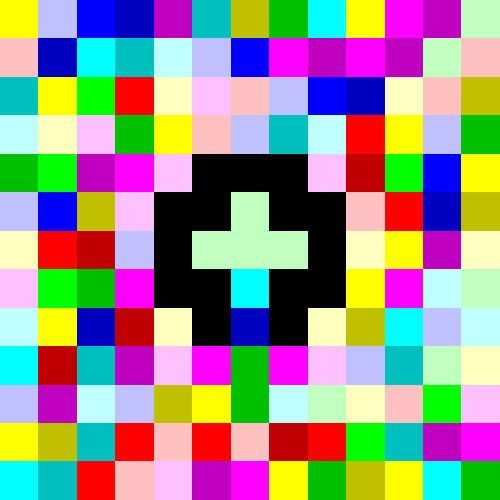
I wan't particulary happy with our team name of Bash simply because I don't like Bash. The other members of our team didn't seem to mind changing the team name. I looked into some programming language names and chose Piet, a bitmap based programming language. I suggested the name to the team and they agreed that it would work.
- Started looking at Laravel tutorials

Laravel is a PHP framework that is used for developing a web applications. We are responsible for teaching ourselves how to use Laravel and to make sure we are familiar with it so that we can use it for our project sprints. I spent some of the remaining time watching the first couple of videos.
I wan't particulary happy with our team name of Bash simply because I don't like Bash. The other members of our team didn't seem to mind changing the team name. I looked into some programming language names and chose Piet, a bitmap based programming language. I suggested the name to the team and they agreed that it would work.
- Started looking at Laravel tutorials
Laravel is a PHP framework that is used for developing a web applications. We are responsible for teaching ourselves how to use Laravel and to make sure we are familiar with it so that we can use it for our project sprints. I spent some of the remaining time watching the first couple of videos.
What did you learn from this session?
- How to jump into a team (flexibility)
We were not allowed to choose our team members and so this forced me to interact with people that I am less familiar with and work with them in a team challenge.
- Helping decide on the approach our group would take towards the research task (12 principles and 4 values)
I simply suggested that we should split the work load into 3 segments so that we could find the definitions much faster. This ended up working out really well because when we had finished we told eachother what we had learnt and gathered a good understanding of the researched material.
- Learning about effective ways to produce software in the real world industry
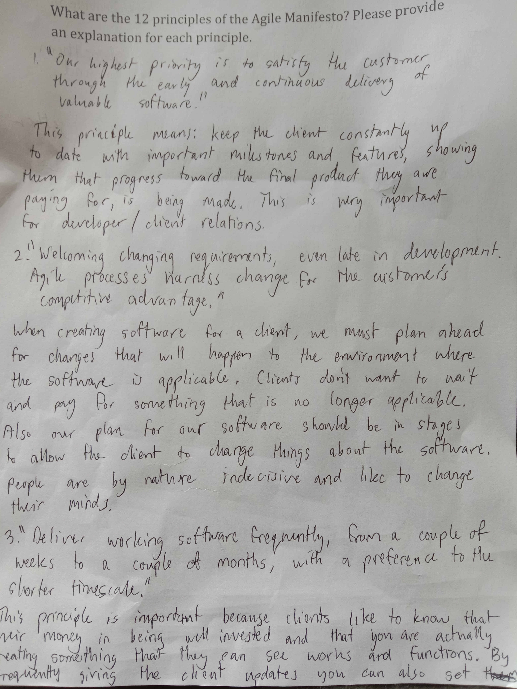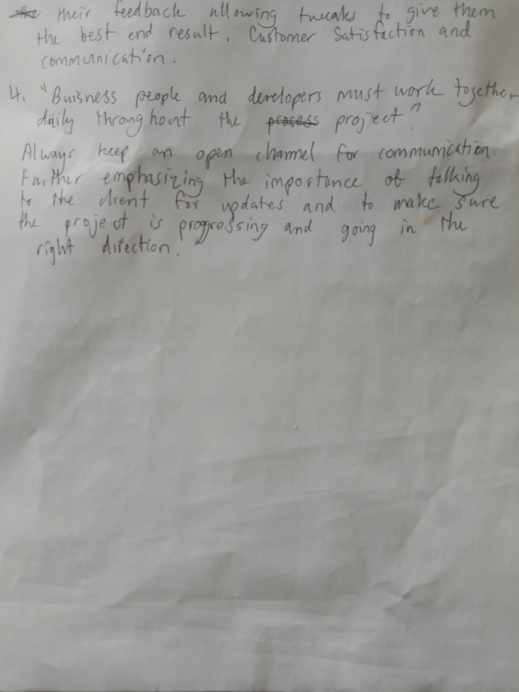
Learning about the 12 main principles and 4 major values of software engineering helped me get a better idea of how to produce software more effectivley and gave me insight on the importance of developer/client communications when developing software.
- Getting to know the team members
Today I met Ian, one of our team members and got an initial idea of how our team members work. Learning about your team members and how they process their work load, especially when they are in a team environmnent, is valuable information.
- Basic background into laravel and how it communicates with servers to retrieve web applications

Today I had my first look at PHP and Laravel. I managed to figure out how to use Laragon to create a Laravel application thanks to some help from Faisal. I learnt about the general concepts of how PHP works in the background with regards to Laravel web applications.
We were not allowed to choose our team members and so this forced me to interact with people that I am less familiar with and work with them in a team challenge.
- Helping decide on the approach our group would take towards the research task (12 principles and 4 values)
I simply suggested that we should split the work load into 3 segments so that we could find the definitions much faster. This ended up working out really well because when we had finished we told eachother what we had learnt and gathered a good understanding of the researched material.
- Learning about effective ways to produce software in the real world industry
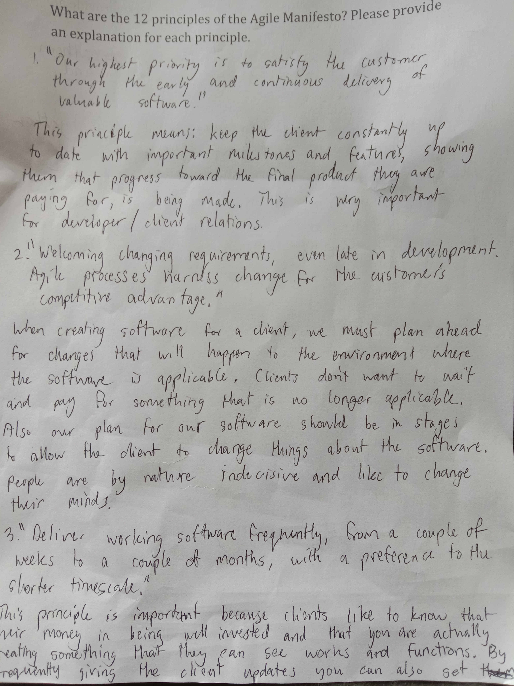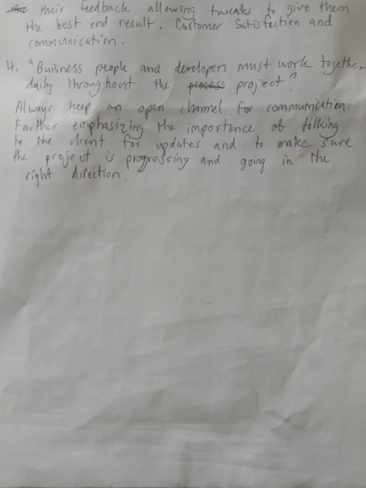
Learning about the 12 main principles and 4 major values of software engineering helped me get a better idea of how to produce software more effectivley and gave me insight on the importance of developer/client communications when developing software.
- Getting to know the team members
Today I met Ian, one of our team members and got an initial idea of how our team members work. Learning about your team members and how they process their work load, especially when they are in a team environmnent, is valuable information.
- Basic background into laravel and how it communicates with servers to retrieve web applications
Today I had my first look at PHP and Laravel. I managed to figure out how to use Laragon to create a Laravel application thanks to some help from Faisal. I learnt about the general concepts of how PHP works in the background with regards to Laravel web applications.
How Does This Relate Back to the 12 Principles?
- Principle 5 "Support, trust, and motivate the people involved"
I believe that I helped to motivate the team during the research task by giving our team a direction as to how we were going to find the information. This helped our team to be more effective and produce a good size response in a short period of time.
- Principle 6 "Enable face-to-face interactions"
Obviously we were in the same room and in the same area as eachother, enabling face to face communication.
- Principle 11 "Self-organizing teams encourage great architectures, requirements, and designs"
Once I had decided on the direction, every member of our team, including myself, was able to independantly source the information we had allocated for eachother. I didn't have to worry about anyone else's progress, creating a bit of trust between me and the team members. It also demonstrated each team member's motivation and ability to research.
- Principle 12 "Regular reflections on how to become more effective"
This reflection in my portfolio will help me to improve my ability both as a team member and as a software developer.
I believe that I helped to motivate the team during the research task by giving our team a direction as to how we were going to find the information. This helped our team to be more effective and produce a good size response in a short period of time.
- Principle 6 "Enable face-to-face interactions"
Obviously we were in the same room and in the same area as eachother, enabling face to face communication.
- Principle 11 "Self-organizing teams encourage great architectures, requirements, and designs"
Once I had decided on the direction, every member of our team, including myself, was able to independantly source the information we had allocated for eachother. I didn't have to worry about anyone else's progress, creating a bit of trust between me and the team members. It also demonstrated each team member's motivation and ability to research.
- Principle 12 "Regular reflections on how to become more effective"
This reflection in my portfolio will help me to improve my ability both as a team member and as a software developer.
Class 2 (24th of July)
What did you do during this class?
- Set up the repository
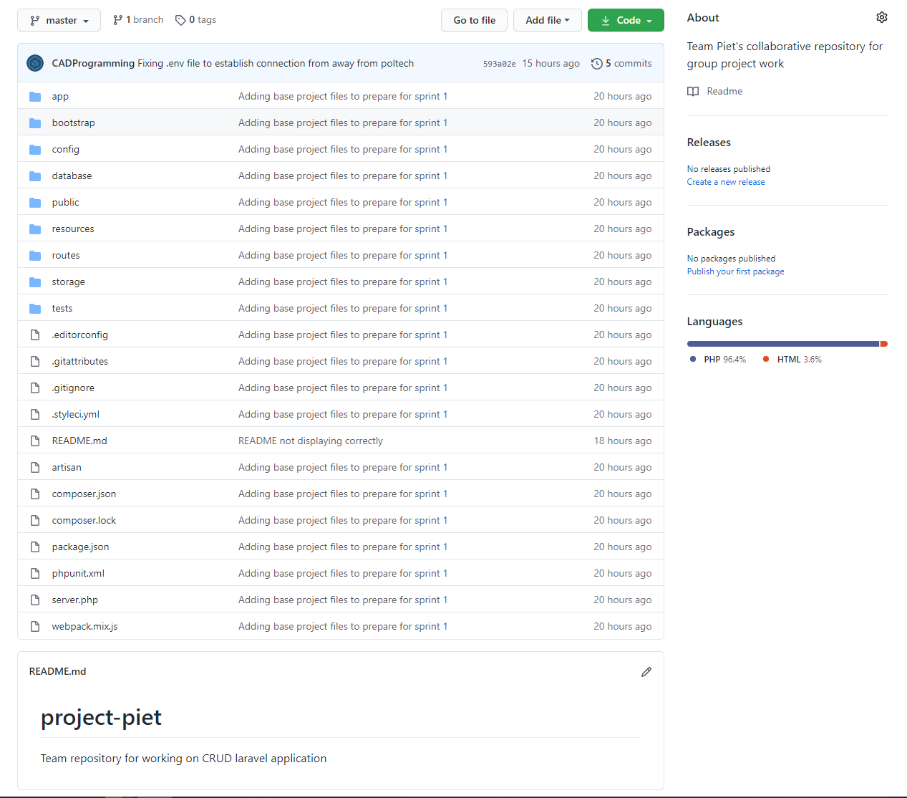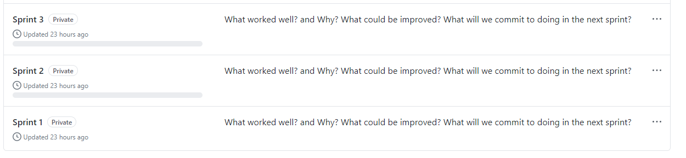
I created our team repository and will be the main person responsible for managing it. I created the first three sprints as projects in the projects tab. I then added a default Laravel project to the repository so that we can begin to create our CRUD application.
- Made sure the members of our team were progressing through some sort of Laravel tutorial
I had progressed through quite a few of the Laracasts tutorials and decided to give a brief explanation of the process of retrieving information from the route, passing that information to the controller, requesting information from the model, then returning that information back to the view.
- Made progress through the Laracsts tutorials
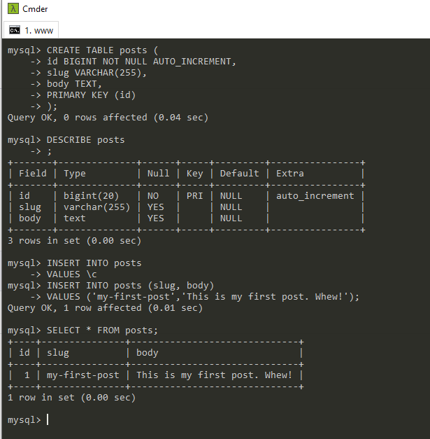
I have gotten to the point in the tutorials where I am connecting an actual database to the view using a controller. I have created a basic table in a database and I'm just about to connect it using the PostsController class in place of the array that currently is acting as the model.
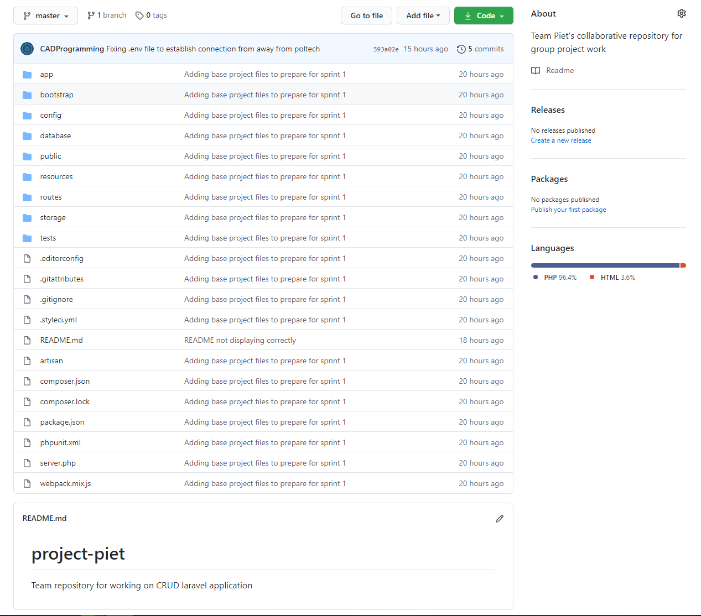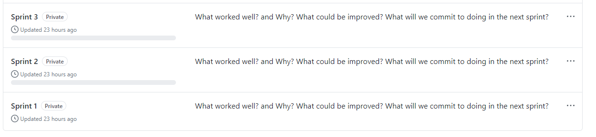
I created our team repository and will be the main person responsible for managing it. I created the first three sprints as projects in the projects tab. I then added a default Laravel project to the repository so that we can begin to create our CRUD application.
- Made sure the members of our team were progressing through some sort of Laravel tutorial
I had progressed through quite a few of the Laracasts tutorials and decided to give a brief explanation of the process of retrieving information from the route, passing that information to the controller, requesting information from the model, then returning that information back to the view.
- Made progress through the Laracsts tutorials
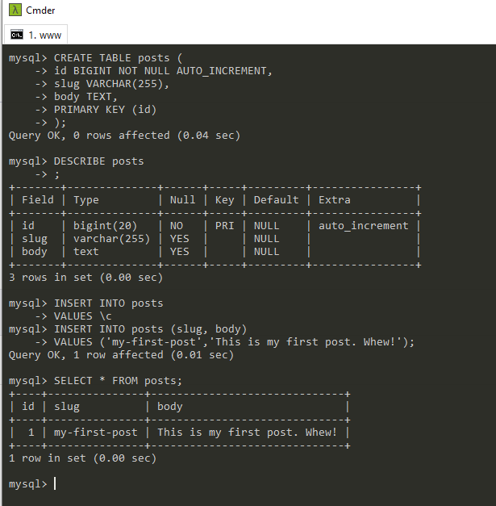
I have gotten to the point in the tutorials where I am connecting an actual database to the view using a controller. I have created a basic table in a database and I'm just about to connect it using the PostsController class in place of the array that currently is acting as the model.
How Does This Relate Back to the 12 Principles?
- Principle 5 "Support, trust, and motivate the people involved"
Making sure my team is making progress and haven't gotten stuck is part of supporting team members which helps to keep them motivated. When people have a direction and don't feel stuck they are generally far more motivated.
- Principle 6 "Enable face-to-face interactions"
Because we were in class, I was able to help my team memebers expand their understanding of Laravel and how the MVC model works. It also made discussing our repository setup and general group direction easier.
- Principle 10 "Simplicity"
The only thing that we have in our repository at this point is the default application. I think that it's a good idea to wait until we have a better understanding of Laravel and the project we are creating before investing too much time into this inital project. This supports the idea of simplicity.
- Principle 11 "Self-organizing teams encourage great architectures, requirements, and designs"
Everyone in our team including myself are currently progressing through the Laravel tutorials independantly.
Making sure my team is making progress and haven't gotten stuck is part of supporting team members which helps to keep them motivated. When people have a direction and don't feel stuck they are generally far more motivated.
- Principle 6 "Enable face-to-face interactions"
Because we were in class, I was able to help my team memebers expand their understanding of Laravel and how the MVC model works. It also made discussing our repository setup and general group direction easier.
- Principle 10 "Simplicity"
The only thing that we have in our repository at this point is the default application. I think that it's a good idea to wait until we have a better understanding of Laravel and the project we are creating before investing too much time into this inital project. This supports the idea of simplicity.
- Principle 11 "Self-organizing teams encourage great architectures, requirements, and designs"
Everyone in our team including myself are currently progressing through the Laravel tutorials independantly.
Outside of Class Work
22nd of July
What work have you been doing outside of class?
- Progressing through the Laracasts tutorial that are on the moodle
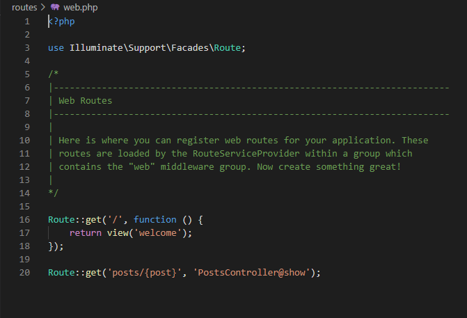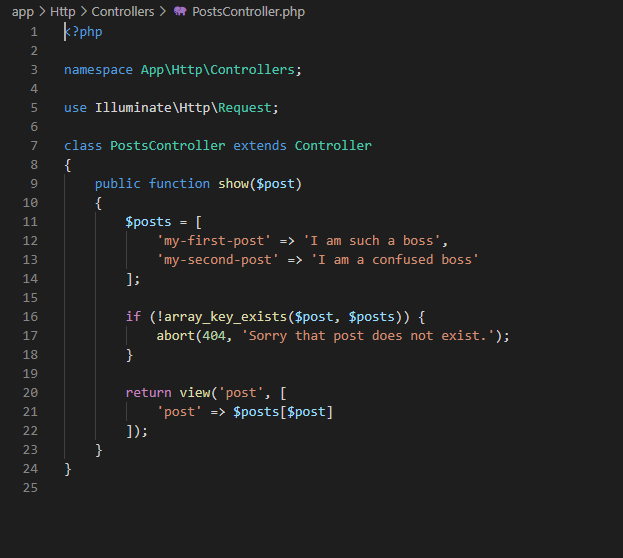
I have learnt about routing, about wildcard/url arguments and how they can be passed to the view via a controller. I have also learnt how to embedd variables into the view using laravel's syntax instead of using PHP.
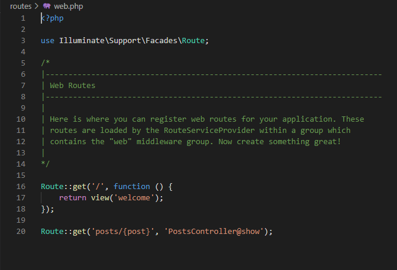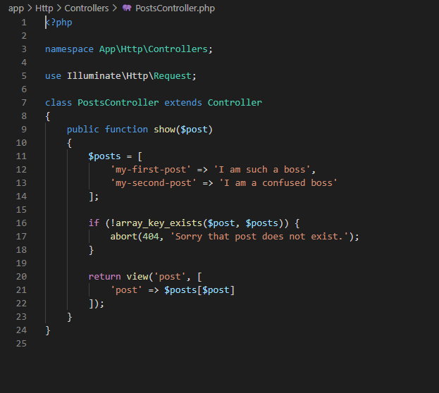
I have learnt about routing, about wildcard/url arguments and how they can be passed to the view via a controller. I have also learnt how to embedd variables into the view using laravel's syntax instead of using PHP.
How Does This Relate Back to the 12 Principles?
- Principle 11 "Self-organizing teams encourage great architectures, requirements, and designs"
I have independantly progressed through the Laravel tutorials up to episode 9.
I have independantly progressed through the Laravel tutorials up to episode 9.
Scroll To Top